El módulo más amplio del sistema: catálogo de productos, bodegas y ubicaciones, movimientos y Kardex, valorización, lotes, alertas y todo el flujo de preparación y despacho de mercadería.
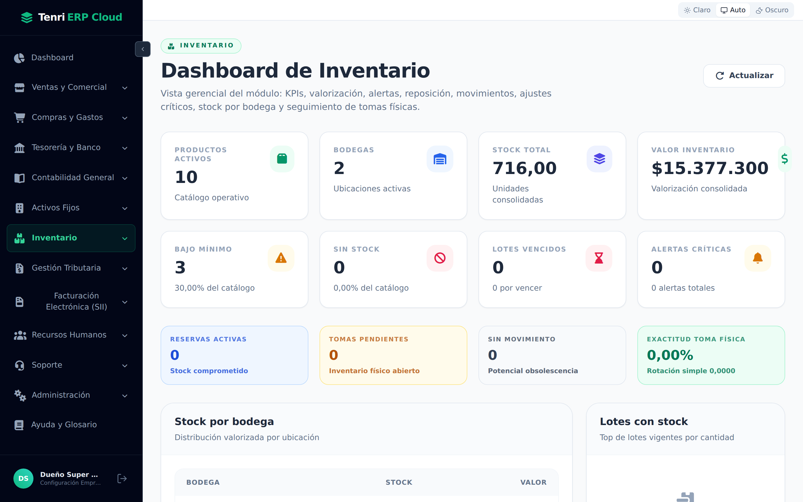
Dieciocho pantallas organizadas en cuatro grandes bloques de trabajo.
Inventario es el módulo con más pantallas de Tenri ERP Cloud. Para no perderse, conviene agruparlas por su función:
| Bloque | Pantallas |
|---|---|
| Catálogo y estructura | Productos, Bodegas, Ubicaciones. |
| Existencias y trazabilidad | Movimientos, Kardex, Valorización, Lotes. |
| Operación de salida | Reservas, Picking, Packing, Despachos, Devoluciones/Reversas. |
| Control y análisis | Dashboard, Alertas y Reposición, Tomas Físicas, Reportes, Auditoría, Eventos de Integración. |
La foto gerencial del módulo en un vistazo.
Al entrar a Inventario, el Dashboard reúne los indicadores clave (KPIs) del área. Los principales:
| Indicador | Qué mide |
|---|---|
| Productos activos | Tamaño del catálogo operativo. |
| Bodegas | Ubicaciones de almacenamiento activas. |
| Stock total / Valor inventario | Unidades consolidadas y su valorización total en pesos. |
| Bajo mínimo / Sin stock | Productos que necesitan reposición. |
| Lotes vencidos / Alertas críticas | Riesgos que requieren atención inmediata. |
Más abajo, el Dashboard muestra la distribución de stock por bodega y los lotes con stock, para ubicar rápidamente dónde está el valor.
El catálogo sobre el que se apoya todo el módulo.
Es la base de artículos que luego usan los movimientos, el Kardex, los lotes, las reservas y las tomas físicas. Con + Nuevo producto crea un artículo. Cada producto tiene:
| Campo | Descripción |
|---|---|
| SKU | Código único interno del producto; también admite código de barras. |
| Unidad | Unidad de medida (Unidad, Kg, Litro, Caja…). |
| Método de valorización | PMP (precio medio ponderado) o FIFO (primero en entrar, primero en salir). |
| Stock mínimo | Umbral que dispara las alertas de reposición. |
| Maneja lotes | Si el producto controla lote y fecha de vencimiento (insumos, perecibles). |
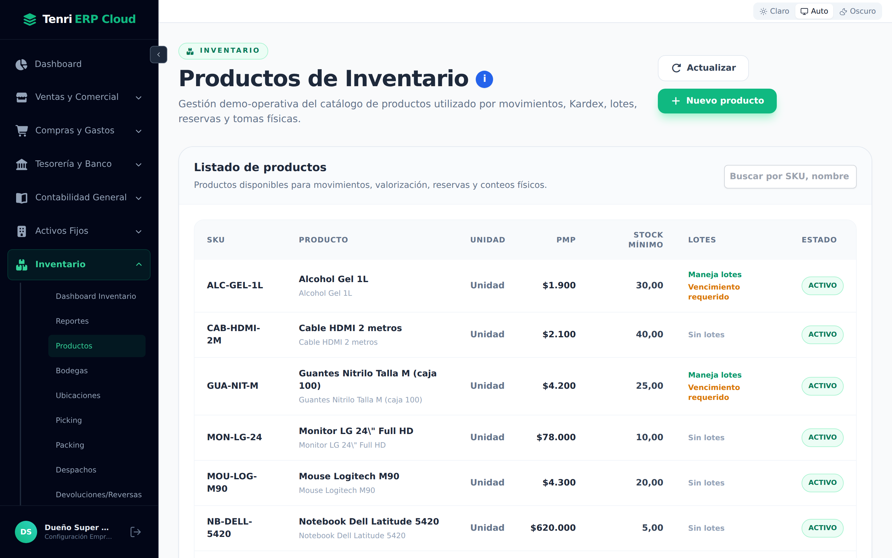
Dónde se guarda físicamente la mercadería.
Una Bodega es un recinto de almacenamiento (por ejemplo, Bodega Central y Bodega Sur). Con + Nueva bodega agrega una; cada una tiene código, nombre, dirección y estado.
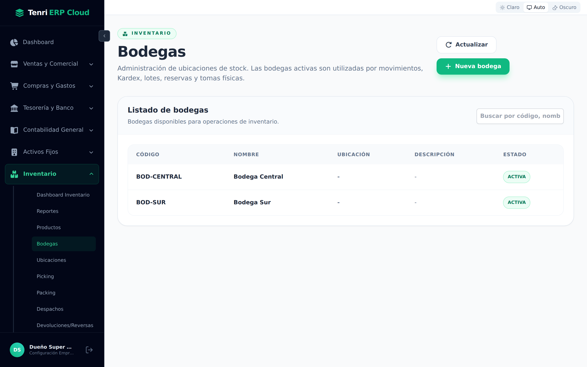
Dentro de cada bodega, las Ubicaciones definen la estructura fina (pasillo, estante, nivel, posición) y su tipo (Zona, Pasillo, Estante, Nivel, Posición, Ubicación). La pantalla de Ubicaciones y disponibilidad avanzada muestra, además, en qué estado está el stock de cada ubicación:
| Estado | Significado |
|---|---|
| Físico | Todas las unidades presentes en la ubicación. |
| Disponible | Stock libre para comprometer o despachar. |
| Reservado | Comprometido por una reserva; no se puede volver a comprometer. |
| Cuarentena / Bloqueado | Stock retenido (control de calidad, incidencia) y no disponible. |
| Tránsito | En traslado entre ubicaciones o bodegas. |
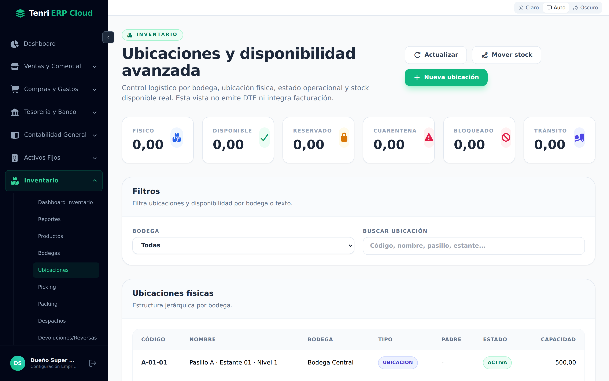
Cada entrada, salida o ajuste que altera el stock.
Los Movimientos son el registro operacional que alimenta el Kardex y la valorización. Con + Nuevo movimiento registra uno. Hay cinco tipos:
| Tipo | Cuándo se usa |
|---|---|
| Entrada | Ingreso de mercadería (compra, devolución de cliente). |
| Salida | Egreso (venta, consumo interno, merma). |
| Traspaso | Movimiento entre bodegas o ubicaciones. |
| Ajuste positivo | Corrección que suma stock (sobrante en conteo). |
| Ajuste negativo | Corrección que resta stock (faltante, deterioro). |
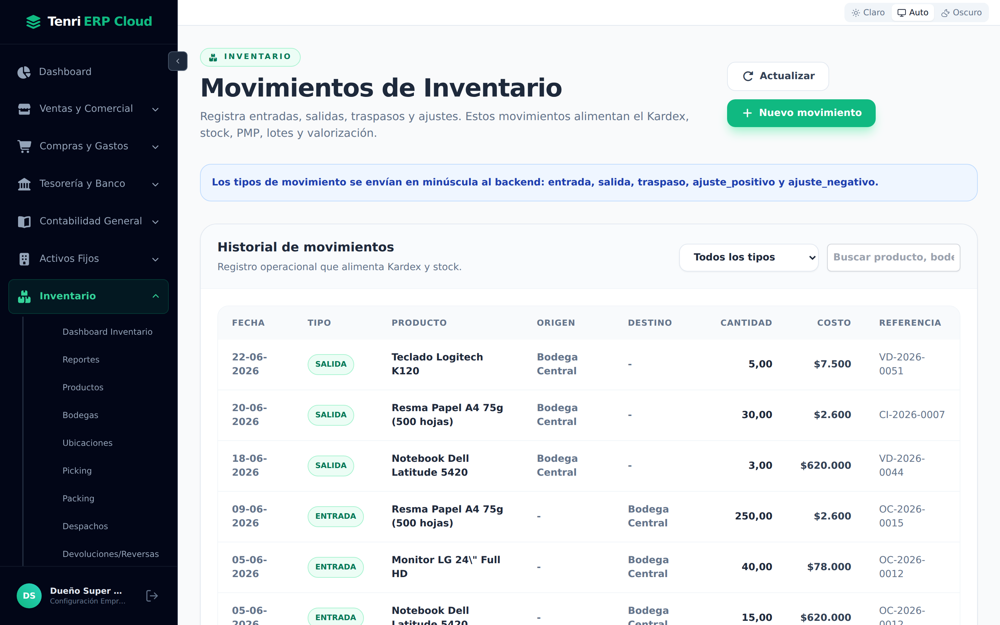
La trazabilidad completa, producto por producto.
El Kardex reconstruye la historia de cada artículo: todas sus entradas, salidas, ajustes y el saldo resultante. Use los filtros de consulta (producto, bodega, lote, tipo, rango de fechas) y presione Consultar Kardex. Es la herramienta de referencia antes de una auditoría o una toma física.
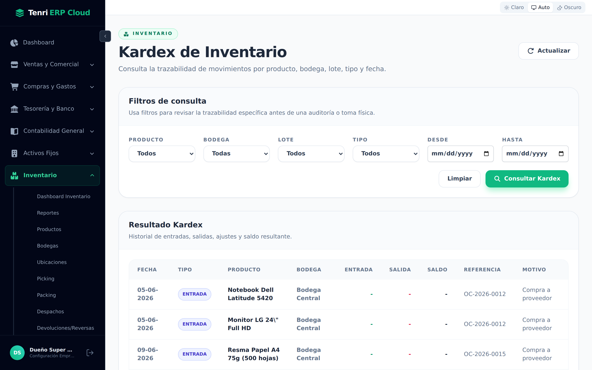
Cuánto vale su inventario, en pesos.
La Valorización muestra el stock valorizado según el PMP/costo promedio de cada producto. Los KPIs superiores resumen las líneas valorizadas, la cantidad física acumulada, el valor total y el costo promedio global. Puede filtrar por producto o bodega. Es la fuente para los reportes contables y la auditoría.
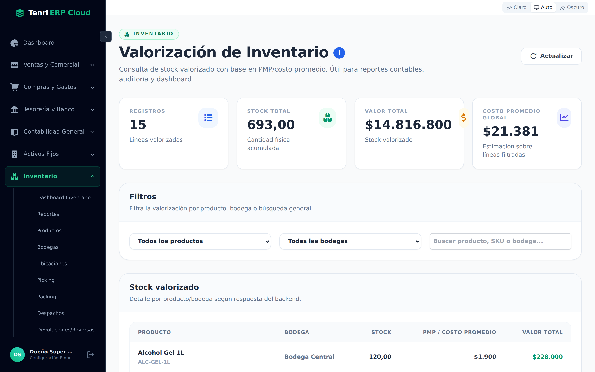
Control granular para productos perecibles o trazables.
Para los productos que manejan lotes, esta pantalla lleva el detalle de cada lote con su código, fecha de fabricación, fecha de vencimiento y estado (Vigente, Por vencer, Vencido). Es clave para insumos, alimentos o productos con caducidad, y permite aplicar correctamente el criterio FIFO al despachar.
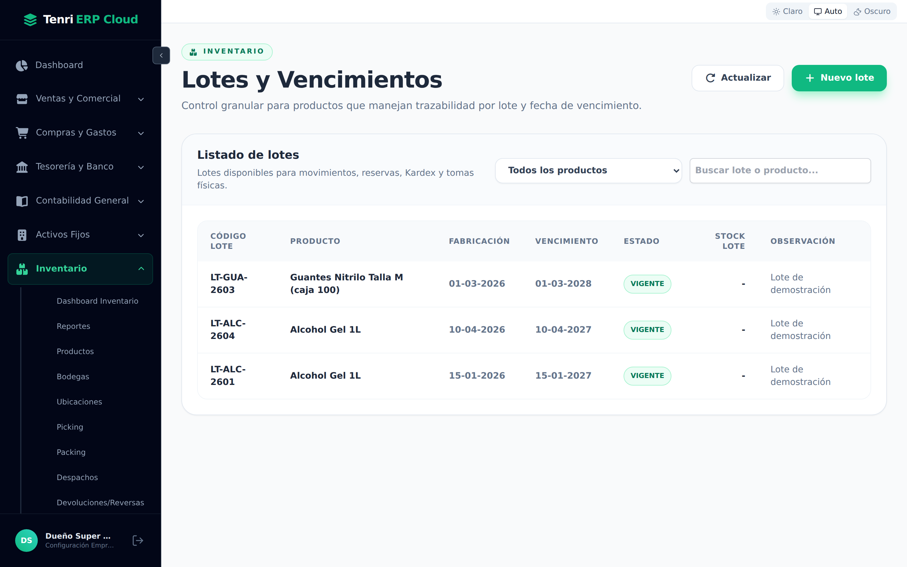
Control proactivo para no quedar sin stock.
Esta pantalla reúne, en un solo lugar, las señales que exigen acción: stock bajo mínimo, reposición sugerida, lotes por vencer, reservas críticas y tomas físicas pendientes. Las alertas se calculan de forma dinámica a partir de las reglas que usted configure con + Nueva regla; el módulo no ejecuta compras ni movimientos automáticos, solo avisa.
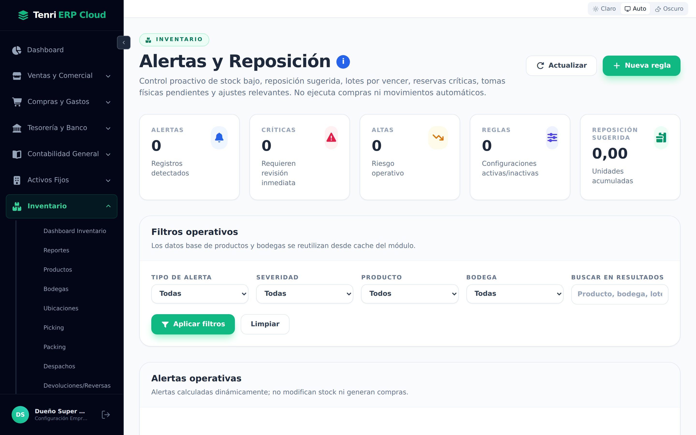
Las cuatro pantallas siguientes forman una cadena: se Reserva el stock, se Prepara (Picking), se Empaca (Packing) y se Despacha. Cada etapa nace de la anterior y ninguna emite documentos tributarios: es logística interna.
Comprometer stock sin sacarlo todavía de bodega.
Una reserva aparta unidades para un pedido: el stock queda comprometido pero no se descuenta hasta que se consume. La regla clave es stock disponible = stock físico − stock reservado activo. Con + Nueva reserva crea una; el listado muestra las reservas activas, consumidas, liberadas o canceladas.
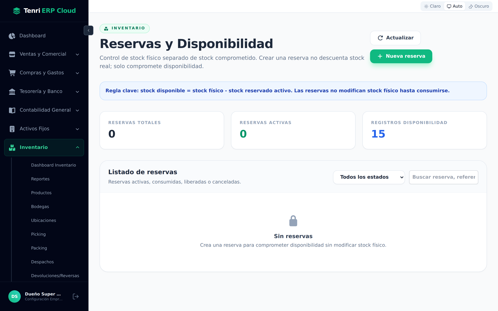
La orden de preparación: qué sacar y de dónde.
El Picking genera órdenes internas de preparación con asignación sugerida multiubicación y multilote: el sistema propone de qué ubicaciones y lotes tomar cada producto, y puede dividir una línea entre varias cuando el stock está fragmentado. Con + Nueva orden comienza. Los KPIs siguen las órdenes pendientes, en preparación y con diferencias.
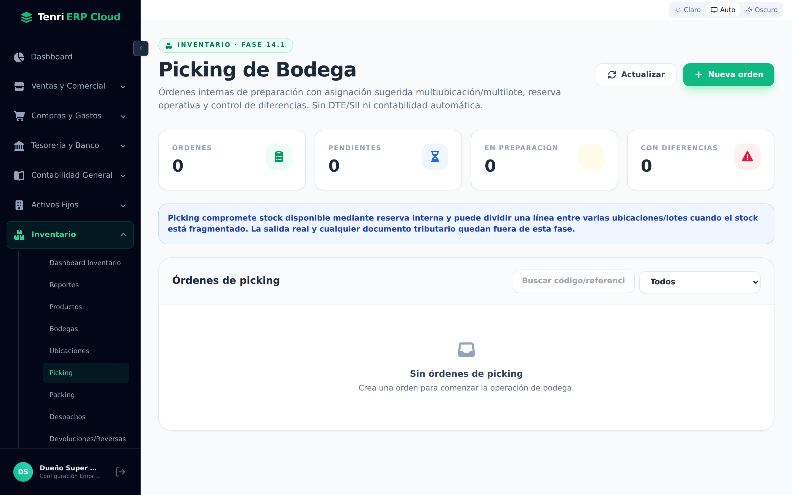
Empacar lo preparado y controlar diferencias.
El Packing nace de un picking completo o con diferencias aceptadas. Con Generar packing se arma el empaque, se controlan las diferencias y se prepara la salida. Esta etapa tampoco emite guías, facturas ni folios tributarios.
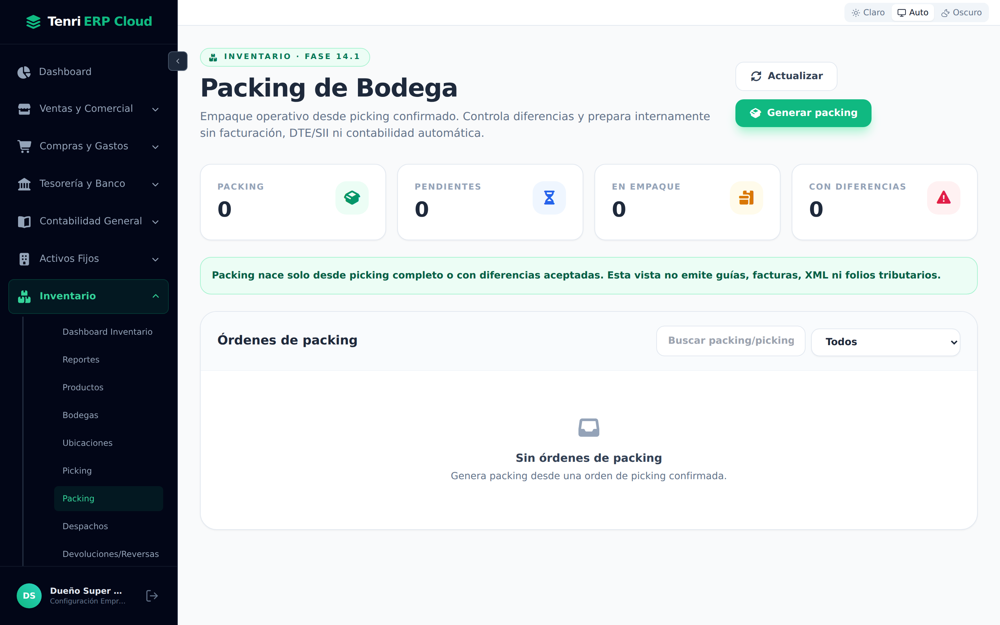
La salida física, controlada desde el empaque.
El Despacho interno se genera desde un packing empacado. Con Generar despacho se confirma la salida: se descuenta el stock físico, se registra el movimiento en el Kardex y se libera la reserva asociada. Es el paso que finalmente rebaja las existencias.
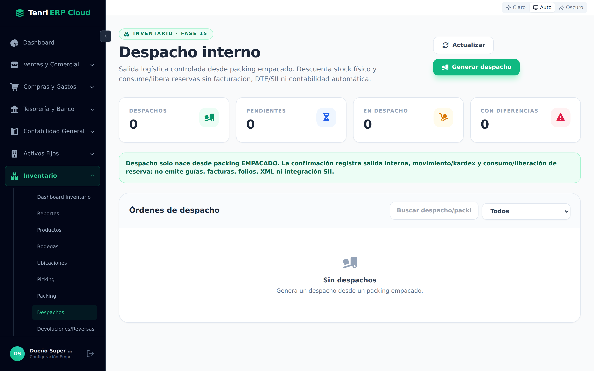
Corregir después del despacho.
Cuando algo vuelve tras un despacho, esta pantalla gestiona el reingreso físico, la reversa total o parcial y las diferencias post-despacho. Las cantidades reversables se calculan contra lo realmente despachado menos lo ya devuelto. Con + Nueva devolución/reversa inicia el proceso, siempre a partir de un despacho confirmado.
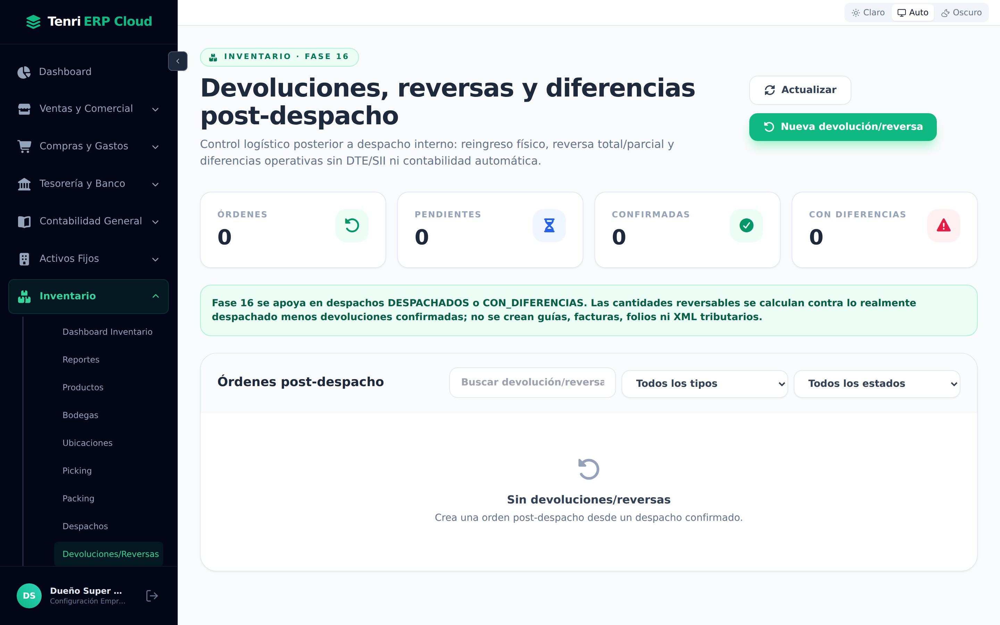
Contar la bodega y ajustar las diferencias.
Una toma física compara el conteo real contra el stock del sistema y genera los ajustes auditables en el Kardex. El flujo recomendado es crear → iniciar → registrar conteos → cerrar → ajustar. La regla crítica: la toma se compara contra el stock físico, no contra el disponible, y las reservas activas no alteran el conteo.
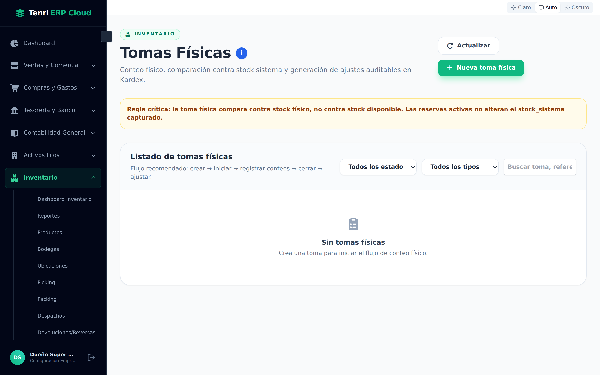
Todo el módulo, exportable a CSV.
La pantalla de Reportes centraliza la información gerencial en tarjetas: Stock, Movimientos, Valorización, Lotes, Reservas, Tomas físicas, Ajustes y Reposición y alertas. Cada reporte se puede filtrar (producto, bodega, estado) y Exportar CSV para llevarlo a una planilla o a contabilidad.
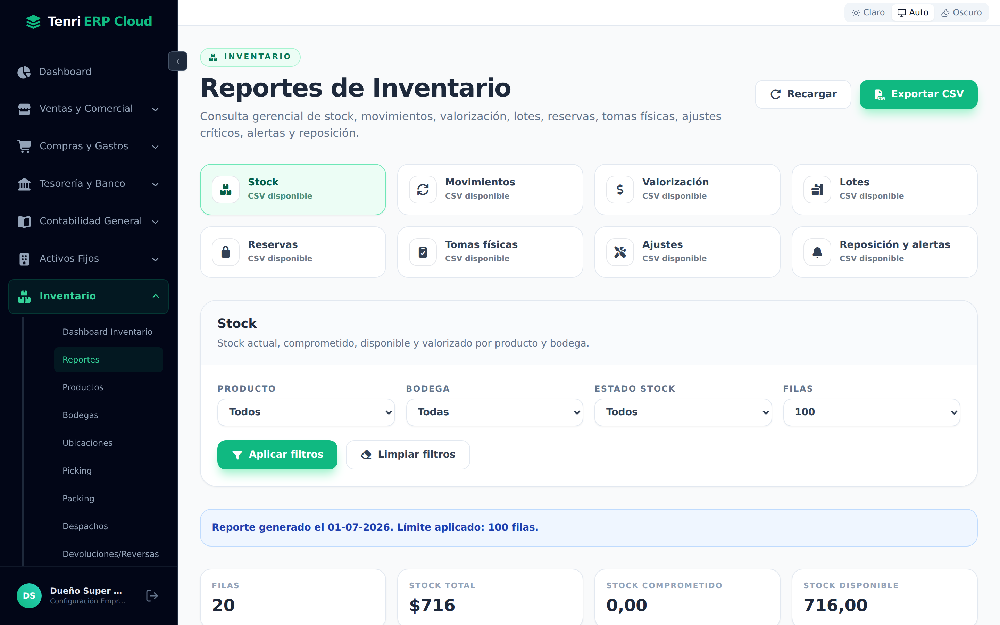
La trazabilidad técnica del módulo.
Dos pantallas de control avanzado cierran el módulo:
| Pantalla | Para qué sirve |
|---|---|
| Auditoría Operativa | Bitácora de trazabilidad por empresa, usuario, acción, entidad, severidad e IP. Registra solo operaciones que cambian datos (no las consultas), sin guardar tokens ni contraseñas. No reemplaza la auditoría tributaria. |
| Eventos de Integración | Bandeja técnica de eventos internos para preparar la integración futura entre Inventario y otros módulos (Facturación, Contabilidad). Útil para soporte y diagnóstico. |
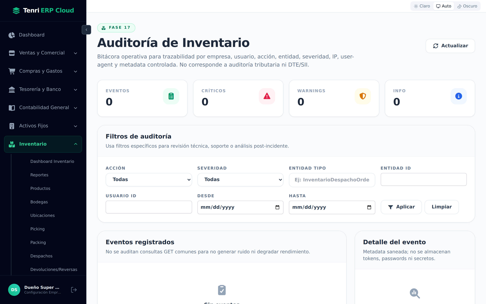
Todo el inventario está aislado por empresa: cada organización ve solo sus bodegas y productos. Además, el acceso a cada pantalla depende de sus permisos: si su rol no habilita, por ejemplo, Despachos o Tomas Físicas, esa opción no aparecerá en el menú.
Inventario cubre el ciclo completo de la mercadería: desde el catálogo y la valorización, hasta la preparación, el despacho y el conteo físico, con trazabilidad total.
Productos, bodegas, ubicaciones, movimientos, Kardex, valorización y lotes.
Reserva, picking, packing, despacho y devoluciones, sin emitir DTE.
Dashboard, alertas, tomas físicas, reportes y auditoría operativa.